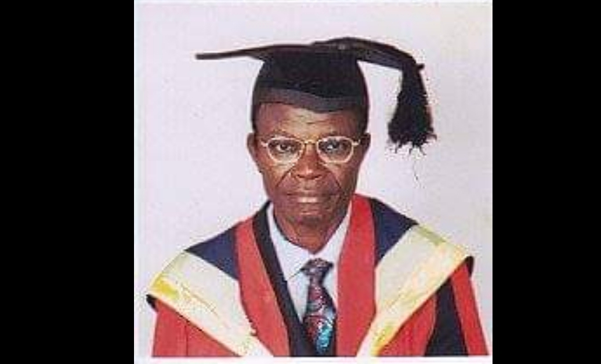

MR. SUNDAY EDET BASSEY EKPO -
As a one time commissioner for information in Akwa Ibom State. Ekpo
is a graduate of Economics of the University of Lagos, he had
a long stint with Mercantile Bank of Nigeria both at its Headquaters
in Calabar and Lagos Branch, bedore going into private business
Read More...

MRS UMO EBIEKPI -
Becomes President of akwa ibom State Chapter of National Association
of Women Entrepreneurs. A prominent member of the National Council for
Women Societies (NCWS). A one time Zonal Inspector of Education and
Principal of Mary Hanney Secondary School, Oron...
Read More...

MAJOR(DR.) OKON EMINUE(RTD) -
A one time appointed commissioner of Agriculture in Akwa Ibom State. A retired
army officer, Eminue read political science and obtained a doctoral degree from
the University of Ibadan. Lectured Political Science at the University of Uyo.
Had been the Chairman of Mbo Local Government Area in Akwa Ibom State.
Read More...
ProjectDIY
The Narrative2020
Someday, I hope that we will all be patriots of our planet and not just of our respective nations.
Doomed is a nation that puts a price tag on information and label it "education"
There is no nation in the history that has not experienced bloodshed and murdering. We all have committed the same mistakes in a different manner